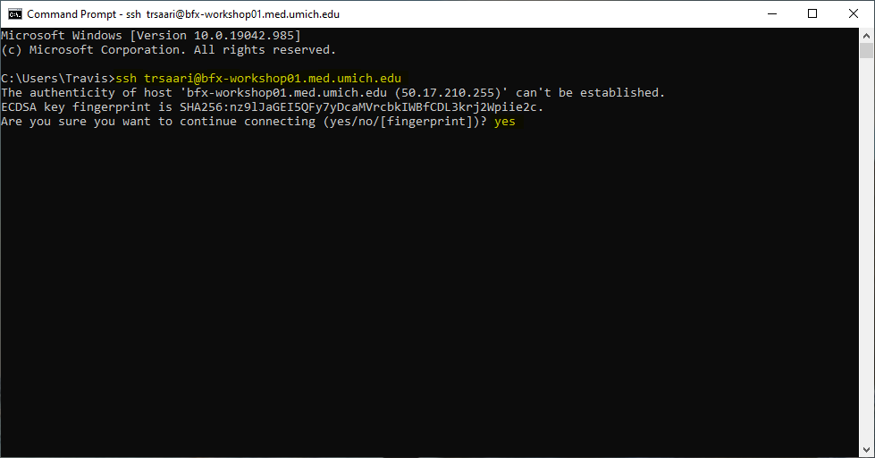

A shell is a computer program that presents a command line interface which allows you to control your computer using commands entered with a keyboard instead of controlling graphical user interfaces (GUIs) with a mouse/keyboard/touchscreen combination.
There are many reasons to learn about the shell:
In this lesson you will learn how to use the command line interface to move around in your file system.
To save time, we are going to be working on a remote server where all the necessary data and software are available. When we say a ‘remote sever’, we are talking about a computer that is not the one you are working on right now. You will create a secure connection with the workshop remote server where everything is prepared for the lesson. We will learn the basics of the shell by manipulating some data files. Some of these files are very large, and would take time to download to your computer. We will also be using several bioinformatic packages in later lessons and installing all of the software would take up time even more time. A ‘ready-to-go’ sever let’s us focus on learning.
This section will be done slightly differently depending on if you’re using a Windows or Unix computer. Here is a drop-down menu to select the appropriate instructions for connecting to the AWS instance.
Please select the platform you wish to use for the exercises:
On a Mac or Linux computer, open up a terminal where you’ll proceed with some commands. On a Mac, you can search for ‘Terminal’ and select the application with that name.
After you’re in the terminal, you can enter the command to connect to the AWS instance:
ssh <username>@bfx-workshop01.med.umich.eduYou will need to enter the password that you were provided before the workshop.
Note: As you type your password, nothing on the screen will change, no
*characters will show up, etc. After you press enter, you’ll receive a response.
If you haven’t connected to the remote system previously, you’ll see a message like the following:
The authenticity of host 'bfx-workshop01.med.umich.edu (50.17.210.255)' can't be established.
ECDSA key fingerprint is SHA256:na9lJaGIE5QFy7yDcaMVrcbkIWBfCDL3krj2Wpiie2c.
Are you sure you want to continue connecting (yes/no/[fingerprint])?Type yes and press enter, and then you will proceed logging in.
On a Windows computer, you will use the windows PowerShell.
To do this, go to your start menu/search and enter the term ‘cmd’; Select the ‘Command Prompt’ application and it should start the shell. The shell should say something like C:\Users\your-pc-username>.
Then you can use the ssh command to connect to the AWS instance:
ssh <username>@bfx-workshop01.med.umich.eduYou will need to enter the password that you were provided before the workshop.
Note: As you type your password, nothing on the screen will change, no
*characters will show up, etc. After you press enter, you’ll receive a response.
If you haven’t connected to the remote system previously, you’ll get a prompt asking if you’re sure you want to connect to this new system. Type yes and press enter, and then you will proceed logging in.
Your shell should look similar to the following (note I’ve highlighted the portions that we’ve typed):

After logging in, you will see a screen showing something like this:
------------------------------------
Welcome to Computational Foundations
------------------------------------
Last login: Tue Feb 1 07:56:36 2022 from 68.40.57.123
<username>@ip-172-31-28-61:~$This shows our login message “Welcome to Computational Foundations”, some information about our last login, and our prompt. We should take a moment to become familiar with the appearance of our remote shell.
lsUse the -l option for the ls command to display more information for each item in the directory. What is one piece of additional information this long format gives you that you don’t see with the bare ls command?
ls
$ ls -ltotal 8
drwxr-x--- 2 dcuser dcuser 4096 Jul 30 2015 sra_metadata
drwxr-xr-x 2 dcuser dcuser 4096 Nov 15 2017 untrimmed_fastqThe additional information given includes the name of the owner of the file, when the file was last modified, and whether the current user has permission to read and write to the file.
No one can possibly learn all of these arguments, that’s what the manual page is for. You can (and should) refer to the manual page or other help files as needed.
Let’s go into the untrimmed_fastq directory and see what is in there.
$ cd untrimmed_fastq
$ ls -FSRR097977.fastq SRR098026.fastqThis directory contains two files with .fastq extensions. FASTQ is a format for storing information about sequencing reads and their quality. We will be learning more about FASTQ files in a later lesson.
Typing out file or directory names can waste a lot of time and it’s easy to make typing mistakes. Instead we can use tab complete as a shortcut. When you start typing out the name of a directory or file, then hit the Tab key, the shell will try to fill in the rest of the directory or file name.
Return to your home directory:
$ cdthen enter:
$ cd she<tab>The shell will fill in the rest of the directory name for CF_Shell.
Now change directories to untrimmed_fastq in CF_Shell
$ cd CF_Shell
$ cd untrimmed_fastqUsing tab complete can be very helpful. However, it will only autocomplete a file or directory name if you’ve typed enough characters to provide a unique identifier for the file or directory you are trying to access.
For example, if we now try to list the files which names start with SR by using tab complete:
$ ls SR<tab>The shell auto-completes your command to SRR09, because all file names in the directory begin with this prefix. When you hit Tab again, the shell will list the possible choices.
$ ls SRR09<tab><tab>SRR097977.fastq SRR098026.fastqTab completion can also fill in the names of programs, which can be useful if you remember the beginning of a program name.
$ pw<tab><tab>pwck pwconv pwd pwdx pwunconvDisplays the name of every program that starts with pw.
We now know how to move around our file system using the command line. This gives us an advantage over interacting with the file system through a GUI as it allows us to work on a remote server, carry out the same set of operations on a large number of files quickly, and opens up many opportunities for using bioinformatic software that is only available in command line versions.
In the next few episodes, we’ll be expanding on these skills and seeing how using the command line shell enables us to make our workflow more efficient and reproducible.